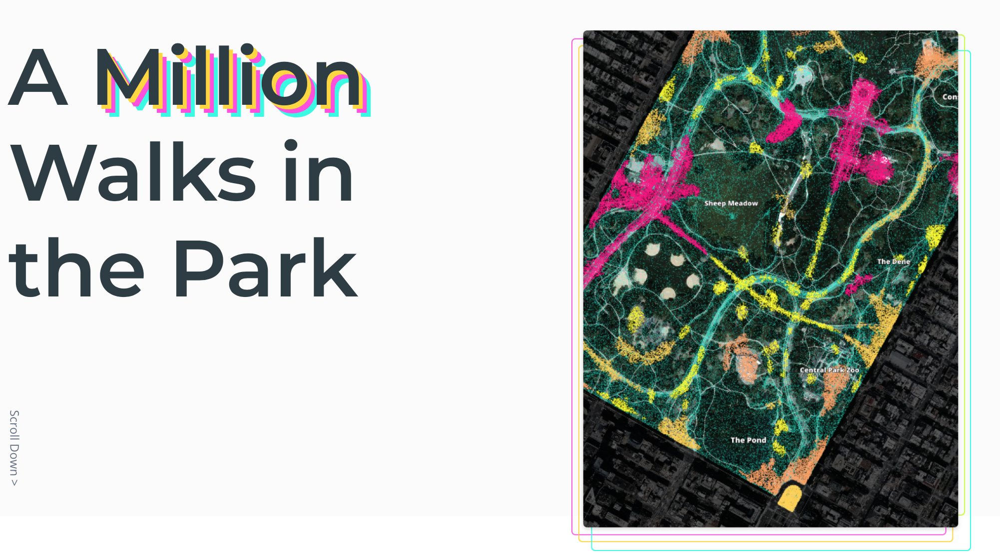

Parks Project Finally Out!

Our project using cell phone app data to understand human mobility and public space land use in New York City parks is just out. We analyze NYC parks on different scales and different levels of specificity to gain a beter understanding of how people use public parks in the city and which places in the park are most popular.